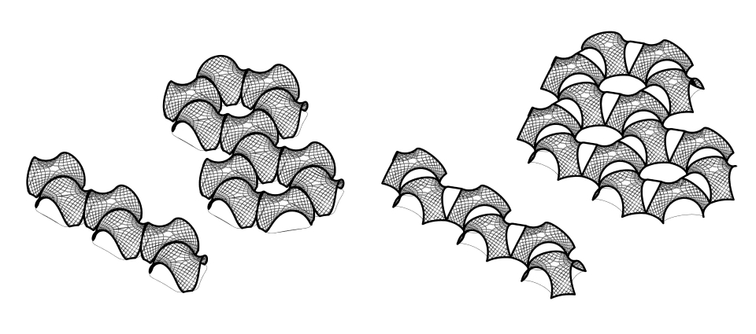

Gridshell¶
 Fig. Conceptual model.
Fig. Conceptual model.
01 - Architectural Design¶
I reviewed some research papers about asymptotic gridshells.
-
Asymptotic Gridshells - applications and analysis. paper
-
DESIGN AND CONSTRUCTION OF THE ASYMPTOTIC PAVILION paper
-
The design, fabrication and assembly of an asymptotic timber gridshell. paper
-
Morphology of Kinetic Asymptotic Grids. paper
-
Designing Asymptotic Geodesic Hybrid Gridshells. paper
“if surface is completely minimal, the asymptotics in the gridshell will coincide perfectly perpendicular, which result in torsion-free nodes and straight strips” (Eike Schling, 2018)
Design goal
A small scale roof structure/ a canopy, which can be built without a building permit, providing a sheltered space from the rain and the sun.
-
[ ] 1) timber gridshell from flat straight planks
-
[ ] 2) covered with watertight matter
-
[ ] 3) assembly from flat
-
[ ] 4) approx. coverage area 35m2
Geometric Requirements

Table 1. Geometric requirements for asymptotic gridshell.
Proposals V1 V2
Taking into consideration the geometric requirements, 2 subsurfaces were cut out of the minimal surface Enneper 3. The asymptotic curves were found with the custom-scripted component for Grasshopper.
Fig 1. Geometric comparison of the V1 and V2 proposals.
Two proposal V1 and V2 can be built as a stand-alone structures. However for the modular assembly is important for the possibilities to cover large spaces. Some modular arrangements are presented below.
 Fig 2. Modular arrangements - top view.
Fig 2. Modular arrangements - top view.
 Fig 3. Modular arrangements - isometry.
02- Prototyping Fabrication¶
I prepared the first model from the thin plywood to test the unrolling script.
Key take aways:
- the material thickness was around 0.88mm, and the slot had 1mm width, not taking into account kerf, allowing on the rotation around 75deg -> this caused difficulty to assemble it in the flat state, but also triggered the self-assembly effect
- larger tolerances on joints cause that elements that has few connections required fastening to not fall off from the flat model state
Next steps:
- accounting for kerf, and the mobility of 60 deg will help in the flat assembly, but decrease the self assembly “willingness”
- self-interlocking joint would allow to keep the larger tolerances and prevent from falling of elements in the flat state
03- Assembly Mechanism Ideas¶
Assembly Mechanism Ideas
 The inflatable one seems like one that could be multi-scale: resemble quite fine the real properties in the scaled model.
The inflatable one seems like one that could be multi-scale: resemble quite fine the real properties in the scaled model.
04 - Structural Analysis: Single vs Double Layer¶
Design Workflow Realizing the complexity of the asymptotic gridshell design enabling erection from a flat grid.

source:
Structural Analysis
Lath: 10cm width, 2x6.5mm thickness (double)
Material: wood ‘birch’ E:910[kN/cm2] G12:360[kN/cm2] G3:360[kN/cm2] gamma:4.5[kN/m3] alphaT:5.0E-6[1/C°] ft:3.8[kN/cm2] fc:-3.8[kN/cm2]
Total mass: 131.504203kg
VideoDouble layer: Deformation of the structure factorized 0-20: Left - gravity, Right: Wind.
| Analysis | Gravity | Wind 0.365kN/m2 |
|---|---|---|
| Load Case | 1.4D | 0.9D + 1.0W |
| displacement [cm] | 1.8 | 2.87 |
| Buckling Factor | 79 | 49 |
Lath: 10cm width, 6.5mm thickness (single)
Material: wood ‘birch’ E:910[kN/cm2] G12:360[kN/cm2] G3:360[kN/cm2] gamma:4.5[kN/m3] alphaT:5.0E-6[1/C°] ft:3.8[kN/cm2] fc:-3.8[kN/cm2]
Total mass: 65.752102kg
- model folding Video Single layer: Deformation of the structure factorized 0-20: Left - gravity, Right: Wind.
| Analysis | Gravity | Wind 0.365kN/m2 |
|---|---|---|
| Load Case | 1.4D | 0.9D + 1.0W |
| displacement [cm] | 5.7 | 17.8 |
| Buckling Factor | 25 | 8 |
| Energy | 0.009754 | 0.087255 |
Key take aways:
-
double-layer necessary for timber structures (or alternative stiffening strategies for single layer structure)
-
the stiffness scaled model should account for double layer thickness in real pavilion
05 - Simulation & Angle Calculation (tolerances indication)¶
Simulation of assembly-disassembly with different rotation DOF at joints.
Key take aways:
-
the angle between joints change more further from the center -> joints closer to legs(supports) need more rotational freedom
-
the joints should allow movement 75-90 deg (more is not necessary e.g. most right example)
06 - Testing Interlocking Connections¶
As for one-time assembly the kinetic joints might not be necessary and it will be enough to account for the rotation between flat and fully assembled state providing adequate tolerances in slots. However, as the slots are bigger to allow some rotation they also cause the problem of elements sliding from each other in the flat state.

Material: PET, 1.18mm The laser either didnt cut through or removed the bumps. The pocket size made a difference in the possible rotations at joints.
The best worked the cut on the small machine with: cut - s4.0, 75p engrave - s80 p65
with the kerf:
-
clear - 0.8 - 1.45, 1.28 (0.4-0.65mm kerf - slower on arc)
-
pocket - 1,65 - 1.76, 1.81 (0.1-0.15mm kerf - line cut)
big machine: cut: s3.0, p90 engrave: s80 p70
-
clear - 0.8 - 1.47, 1.52 (0.67-0.72mm kerf - slower on arc)
-
pocket - 1.65 - 1.87, 1.95 (0.22-0.30mm kerf - line cut)
Key take aways:
- the scaled model needs to be larger than scale 1:18 or 1:10 to be cut with laser and these joints
- the bump needs to be bigger than kerf on arc cut
07 - Structurally Feasible 1:1 model¶
For the kinetic-actuated assembly with simple joints (cuts in the laths), I have to keep the structure of the asymptotic gridshell from a single layer of asymptotic laths. However, as the structural analyis shows above, the structure is too weak with the single layer plywood laths 6.5mm thick. Increasing thickness is not possible due to the bending (thicker material cannot bend that easily and can easily break- casuing structural failoure). The project assumption is to use kinetic movement for assembly (and maybe dissasembly), prefarably only once in the Life Cycle of the structure - to assemble it on the site. The assembly device should work as assembler of the sttucture and not as a kinetic actuator for the kinetic sculpture. Therefore to keep the single layer of the asymptotic grid (which can be easily assebmled from flat), I added a developable plates, which will be mounted between laths after assembly to check the structural performance.


Key take aways:
- assuming the 1:1 gridshell structure with filling developable plates the structural performance is satisfactory
Next steps:
- calculation of the material thickness for 1:5 stiffness scaled model -> testing the kinetic joints with tolerances - > preparation of the fabrication files
08 - Stiffness-scaled model¶
Calculating the thickness of plywood for stiffness-scaled model 1:5.
| Analysis Model | 1:1 | 1:5 |
|---|---|---|
| Load Case 1.4D | 6.4mm x 10cm, single, 5cm | disp.1cm, thickness x width: 0.5mm x 20mm |
| Load Case 1.4D | 6.4mm x 10cm, single + 0.5mm thick plates, disp.0.19cm | 0.04cm, xx |
| Load Case 1.4D | 6.4mmx10cm, double, 1.8cm | thickness x width: 1.0mm x 20mm, disp.0.34cm |
Grasshopper-Karamba Analysis: gh -file
Fig.. Stiffness scaled model. Left: The real structure laths 6.5mmx100mm double layer, Birch plywood, Right: model 1:5 laths 1mmx20mm, single layer Birch.
Key take aways:
- considering stiffness-scaling, already for 1:5 scale, I need a very thin plywood of 0.8mm-1mm, therefore the 1:5 scale was considered as suitable for prototype
09 - Assembly membrane¶
After trying to make a list of materials and where to get them -> I discovered that there is no way (really no way) to find thin plywood in Mexico. I considered ordering it from the US, or even Finland or Poland, but the amount for the model needed (like 1 board for 1:5 prototype) and even if 4 boards to allow the mistakes, the costs and taxes, and effort is not proportional to the amount I need. Therefore after reviewing if I can make it from aluminum sheets, as this is also common for real structures, the thinnest aluminum 0.5mm is already very stiff, what would mean the model would be bigger than 1:5, and no possibility to cut the aluminum in local fab or with the aluminium provider offering cutting services, I looked for alternative ways to errect resembling shape. Desingning a membrane which can errect the structure and potetially stay on the structure after assembly is a great idea. I managed to calculate the inflatable surfaces of the membrane to reseamle exaclty the shortenning and extending of the diagonals of the grid.
Membrane Design resembling the shortening of the diagonals: More about the design process: week16
Key take aways:
- although it is a great idea and I would really like to make it, I have the same problem as with gridstrucutre -> I don’t know what material and where to find it and if I find it on time, and even if I find it -> I never made inflatable with laser and I have no idea how long it can take me to produce it
- I need a air pump -> following the Neil’s advice I reviewed this: https://www.softrobotics.io/, aware about ticking clock for the final project, I gave a shot and emailed them asking if I can borrow one unit for the course time or if there is a chance they can send me the components for assembly of it, however I was left without reply
- no inflatable membrane for the final project
10 - IP, Planning¶
CC - Creative Common License:
Key take aways:
- I touched the thinnest aluminium sheets available and realize they are too stiff for any model scale
- I have a lot of PET20, PET30, PET40- > and now this is the only option -> I need to make a laser tests and choose a scale for the model
- finding the scale for the acrylic thickness
- I have also reviewed CC licenses and chose: Attribution-NonCommercial 4.0 International (CC BY-NC- 4.0).
W11 - Acrylic Model¶
I design and produce samples to assess the kerf and posible precision of cutting for PET20, PET30, PET40. Obviously the best precision was for the thinnest PET20.
 Fig. Self-interlocing joint test PET20 V4 with tolerance allowing flat assembly (50-90deg) - it worked well :).
Fig. Self-interlocing joint test PET20 V4 with tolerance allowing flat assembly (50-90deg) - it worked well :).
The PET30 &PET 40 was not possible to be cut on laser with a detail allowing controllnig the tolerances (slot size for rotation) & bump slot design stopping the stripes from falling, therefore I had to find a scale for the PET20 for which elements has enough stiffness. I made first the model 1:10 from PET20 - it was to slender.
 I assembled also model 1:20, that was still not stiff enough.
The next attempt was successful: PET20 1:25 scale -> elements had enough stiffness and could be cut with satisfactory precision so that the self locking joints hold the laths.
I assembled also model 1:20, that was still not stiff enough.
The next attempt was successful: PET20 1:25 scale -> elements had enough stiffness and could be cut with satisfactory precision so that the self locking joints hold the laths.
After 2 hours of removing carefully elements from the acrylic sheet without breaking:
.jpeg) After 5 hours of cleaning elements with aceton and assembling the flat structure:
After 5 hours of cleaning elements with aceton and assembling the flat structure:

More about the fabrication process: week18
Key take aways:
- I hate cutting plastic
- it is great that asyptotic gridshell work so well as a system, but also it makes it almost impossible to evaluate performance of structure based on 2 laths connected - > only assembling the whole model the scale and/or thickness could be evaluated :(
- Selected laser parameters:
- PET-G 20 0.55mm: Overall: S11P100: Divided: ->S10P100/S11P100 - long Lines ->S13P100 - details
- PET-G 30 0.74mm: Overall: S10P100: Divided: ->S10P100/S09P100 - long Lines ->S11P100 - details